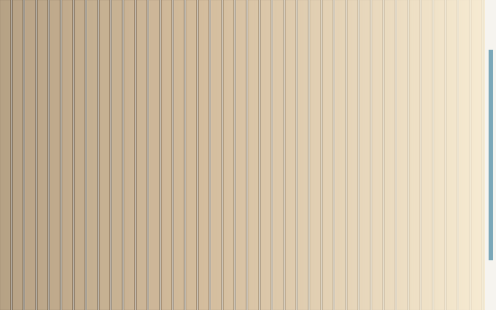
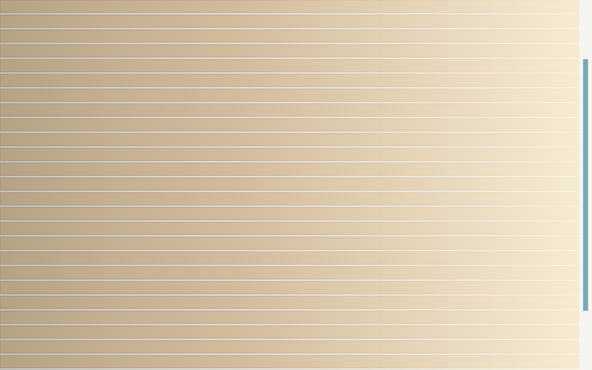

La lumière rasante révèle les reliefs. Sur un parquet, chaque joint entre deux lames forme une arête minuscule qui projette une ombre dès que la lumière arrive de côté. Multipliée par des dizaines de joints, cette ombre dessine des lignes bien visibles.
Le phénomène en une image
Placez les lames perpendiculairement à la fenêtre et les rayons filent le long des joints : l'ombre reste dans l'axe et se remarque peu. Placez-les parallèlement à la fenêtre et chaque joint se retrouve éclairé de côté : les lignes ressortent, surtout en fin de journée.


Déplacez le curseur pour comparer les deux orientations sous la même lumière.
Quand la règle s'applique vraiment
- Pièce éclairée par une seule ouverture principale.
- Finition brossée, huilée ou vieillie, qui accroche la lumière.
- Lames étroites et nombreuses, donc joints nombreux.
- Sol très éclairé en lumière naturelle rasante, typiquement une exposition ouest.
Les quatre exceptions
| Situation | Ce qui prime | Direction retenue |
|---|---|---|
| Couloir étroit | Continuité de la circulation | Dans l'axe du couloir |
| Pièce très allongée | Correction des proportions | Dans la largeur ou en diagonale |
| Pose clouée sur solives | Contrainte structurelle | Perpendiculaire aux solives |
| Motif orienté (Point de Hongrie) | Axe du motif | Axe principal de la pièce |
Repérer la bonne direction en pratique
Observez la pièce en fin de journée
C'est le moment où la lumière est la plus rasante, donc le plus révélateur.
Posez quelques lames à blanc
Trois ou quatre lames suffisent, dans une orientation puis dans l’autre, au même endroit.
Photographiez les deux essais
La photo aplatit la perspective et montre les lignes de joints plus objectivement que l'œil.
Simuler la lumière dans votre pièce
Le simulateur place la fenêtre sur le mur de votre choix et applique une nappe de lumière cohérente avec le motif retenu. Utile pour comparer sans poser une seule lame.
Questions fréquentes
Les lames sont posées perpendiculairement au mur qui porte la fenêtre, donc parallèlement à la direction des rayons qui entrent dans la pièce.
Retenez l'ouverture qui apporte la lumière la plus rasante et la plus durable dans la journée, souvent la plus grande ou celle exposée au sud. Les autres critères, proportions et axe d'entrée, départagent ensuite.
Elle compte moins. Une finition très mate et peu texturée renvoie peu de lumière rasante : les joints se voient nettement moins, et les autres critères prennent le dessus.